🎉 Bienvenue
Bienvenue sur FoundClub ! Prépare-toi à gérer tes équipes et tes événements simplement et efficacement.
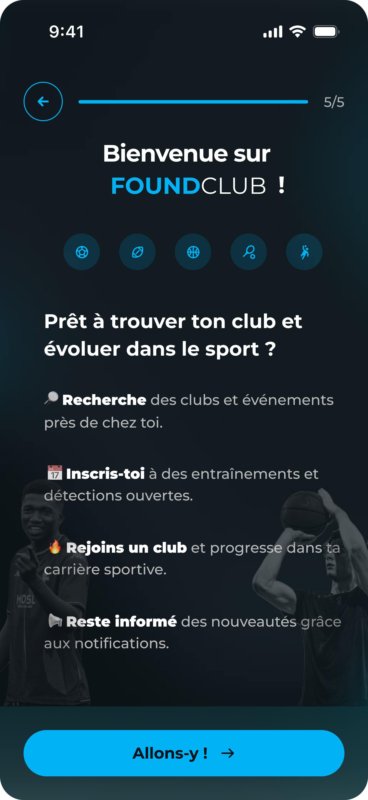
📱 Création de compte
Entre ton numéro de téléphone, choisis un mot de passe sécurisé et confirme-le pour créer ton compte entraîneur.

👤 Informations personnelles
Renseigne ton nom et ton prénom.
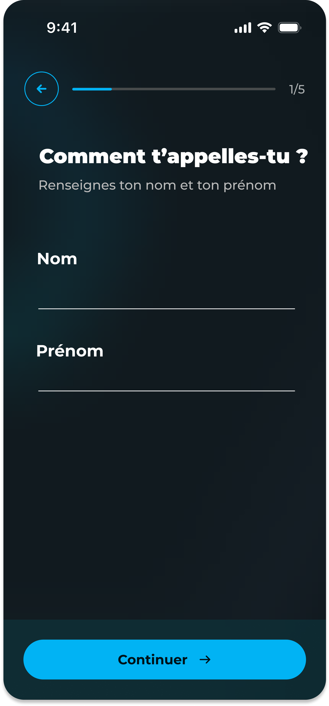
🎂 Date de naissance
Indique ta date de naissance pour compléter ton profil.
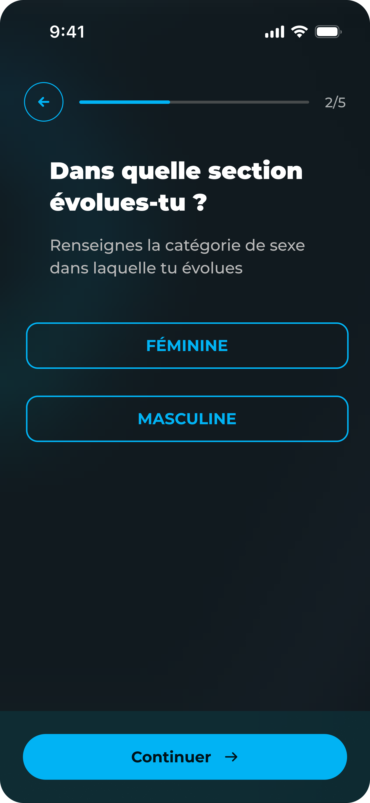
📷 Photo de profil
Ajoute une photo de profil pour être facilement identifiable par les clubs et les joueurs.
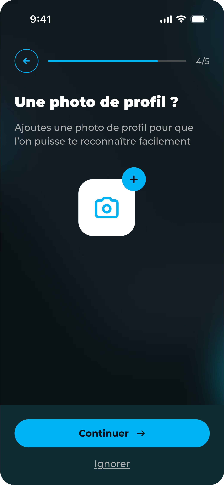
🔍 Rechercher un club
Accède à l’onglet “Mon équipe” puis clique sur “Rechercher un club”. Tu peux filtrer ta recherche par sport et ville.
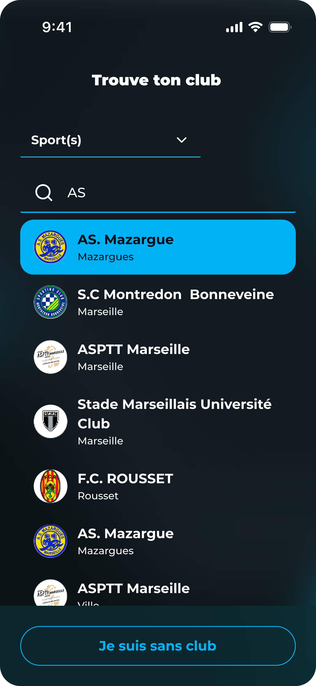
🏢 Voir la fiche club
Consulte les informations d’un club : adresse, contacts, équipes, partenaires…
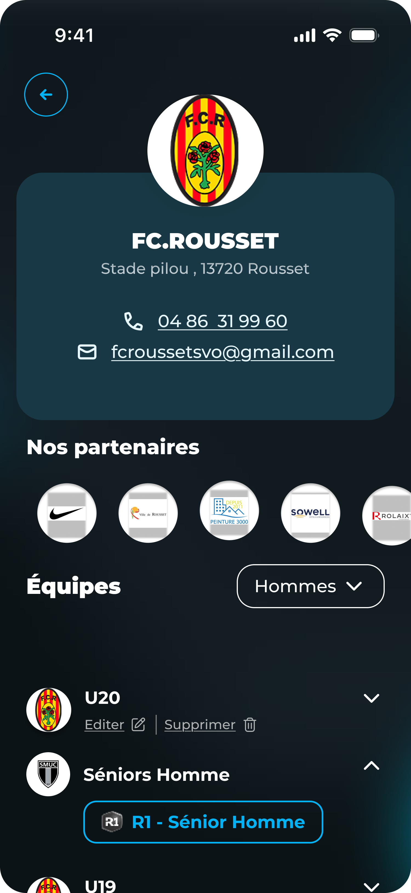
📩 Faire une demande
Choisis une équipe dans le club sélectionné et envoie ta demande d’affiliation.
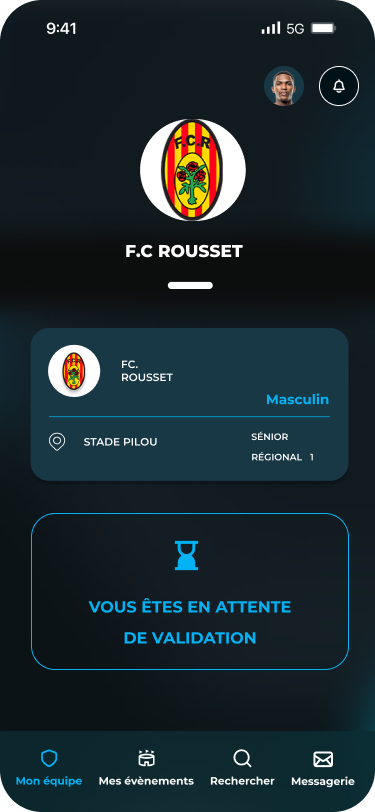
⏳ Attente de validation
Tu es en attente de validation par le club. Une fois accepté, tu pourras commencer à gérer ton équipe.

🧩 Sans club
Si tu n’es affilié à aucun club, tu peux toujours accéder à certaines fonctionnalités de FoundClub.
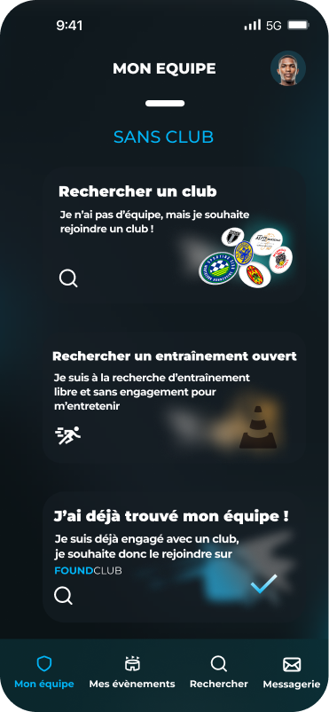
📆 Voir les événements
Accède à tes événements à venir : entraînements, matchs, détections, etc. Tu peux filtrer par type ou date.
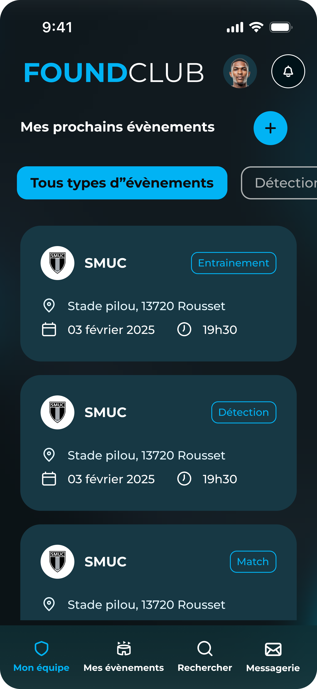
➕ Créer un événement
Crée un événement en choisissant le type (entraînement, match...), le sport, le lieu, la date, l'heure, la catégorie, le niveau, le statut (ouvert/fermé), la récurrence, le nombre de places et une description.
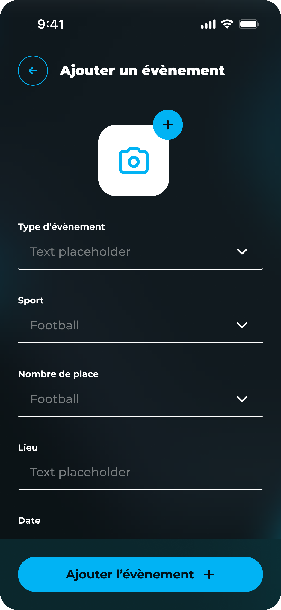
📋 Gérer les présences
Sur la fiche événement, vois qui est inscrit, refuse un joueur si besoin et consulte les infos de chaque participant.
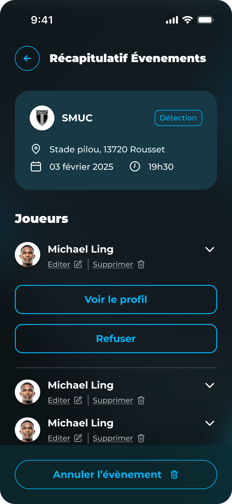
🙅♂️ Motif de refus
Tu peux refuser un joueur à un événement et préciser pourquoi : niveau, comportement, ou autre motif personnalisé.
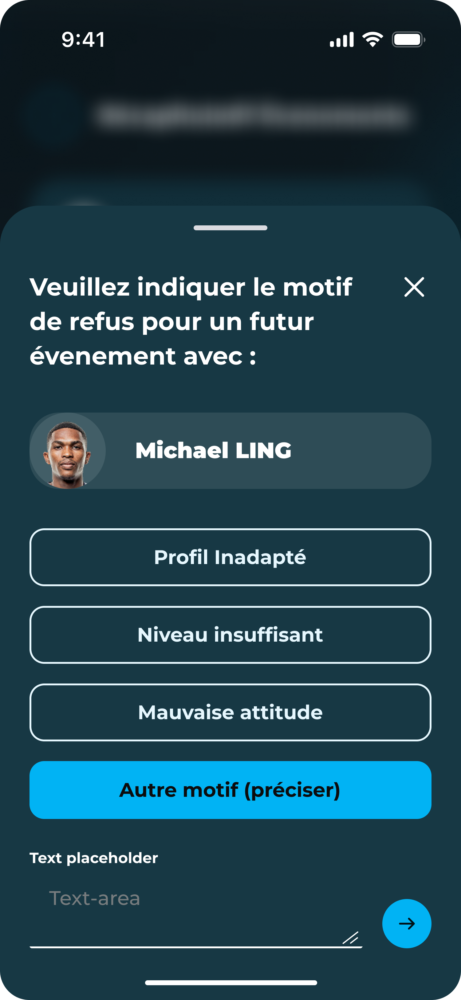